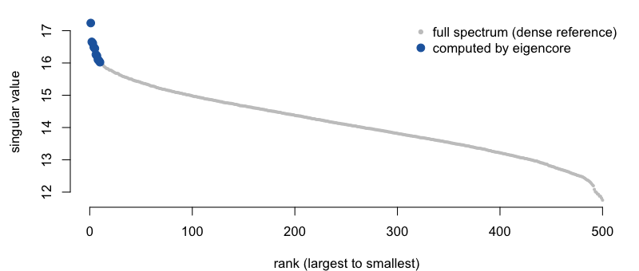
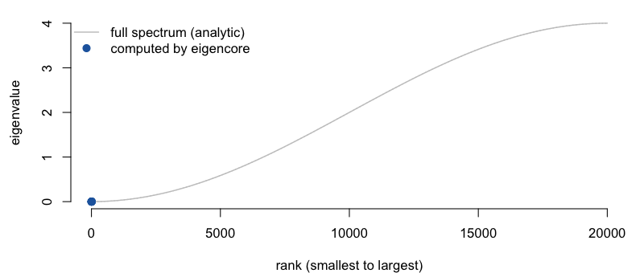

eigencore computes the top-k singular triplets or eigenpairs of a large sparse or structured matrix in R — the computation behind PCA on big sparse data, spectral embeddings, LSA, and low-rank approximation. It also certifies real symmetric positive-semidefinite (PSD) geometry, including singular forms whose null spaces must remain explicit.
eigencore focuses on three things:
-
Every result is checked. Each call returns residuals, a backward-error bound, orthogonality loss, and a single
passed/failedflag. The backward error uses the standard 2-norm definition with a denominator that never exceeds||A||_2, so a certificate can only over-state the error. - Centering and scaling without densifying. Explicitly centering a sparse matrix for PCA can require a dense copy. eigencore solves the centered (or scaled, or composed) problem as an operator, without forming that copy.
- PSD actions match their evidence. Complete dense and diagonal factors expose roots, pseudoinverses, projectors, and image reduction. Structural sparse Gram and Laplacian factors expose only what their construction proves, and unsupported requests fail before dense fallback.
Supported structured problems run through fast native kernels. The Benchmarks section compares them with RSpectra, irlba and base R using stored, reproducible results with independent accuracy checks.
Installation
# install.packages("pak")
pak::pak("bbuchsbaum/eigencore")Quick start
The top 10 singular triplets of a 100,000 × 500 sparse matrix — the core computation in sparse PCA and LSA:
library(eigencore)
library(Matrix)
set.seed(2)
A <- as(rsparsematrix(100000, 500, density = 0.002), "dgCMatrix")
fit <- svd_partial(A, rank = 10, target = largest())
fit
#> Partial SVD
#> requested rank: 10
#> converged rank: 10
#> method: native certified Gram SVD special case
#> target: largest
#> max residual: 1.736519e-14
#> max backward error: 1.007435e-15
#> max orthogonality loss: 1.332268e-15
#> norm bound: two_norm_lower_bound
#> scale estimated: FALSE
#> certificate: passedThe printout names the kernel that ran, gives the worst residual, backward error, and orthogonality loss across the returned triplets, and shows the certificate passed. The backward error divides by a lower bound on ||A||_2 (two_norm_lower_bound), so it can only over-state the true normwise backward error. This problem uses the native certified Gram path; see Benchmarks for reproducible timings.

Certificates
An iterative solver can stop early, miss a cluster, or lose orthogonality and still return plausible-looking numbers. eigencore makes validation part of the returned result: it checks both singular relations (||A v - sigma u|| and ||A^T u - sigma v||) and exposes the evidence:
fit$certificate
#> eigencore certificate
#> passed: TRUE
#> tolerance: 1e-08
#> type: residual_backward_error
#> norm bound: two_norm_lower_bound
#> norm source: applied_vectors
#> scale estimated: FALSE
#> max residual: 1.736519e-14
#> max backward error: 1.007435e-15
#> max orthogonality loss: 1.332268e-15
#> orthogonality tolerance: 1.490116e-08
#> orthogonality required: TRUEThe backward error is the standard normwise one, max residual / ||A||_2 for an SVD and ||A x - lambda x|| / ((||A||_2 + |lambda|) ||x||) for an eigenpair. The exact ||A||_2 is rarely available, so eigencore divides by a value that never exceeds it: the exact norm where it is cheap (diagonal matrices, a full computed spectrum), otherwise the largest of the column norms, the ||A x|| / ||x|| ratios of the returned vectors, and, only when that could change the verdict, a short deterministic Lanczos estimate. A smaller denominator makes the reported backward error larger, so passed is never optimistic. norm_bound_type says whether the scale was exact or a lower bound, and norm_source says where it came from.
This also covers operators with no cheap norm at all, such as a double-centered sparse matrix, which eigencore never forms explicitly:
cen <- svd_partial(center(A, rows = TRUE, columns = TRUE), rank = 5,
target = largest())
cen$certificate$passed
#> [1] TRUE
cen$certificate$norm_bound_type
#> [1] "two_norm_lower_bound"
cen$certificate$norm_source
#> [1] "applied_vectors"If a pair’s residual is not small relative to this scale, the certificate fails and failed_indices names the offending pairs; the explicit flag lets downstream code act on that without inferring it from solver convergence.
Certified singular PSD geometry
A singular PSD form is a seminorm on the original coordinates and a genuine metric only on its image, or on the quotient by its null space. Certify the form once, inspect its numerical rank, and reduce data explicitly before an algorithm that requires an inner product:
L_metric <- matrix(c(
1, 0, 1,
0, 1, 1
), 2, 3, byrow = TRUE)
K <- crossprod(L_metric)
K_factor <- psd_factor(K)
c(rank = psd_rank(K_factor), nullity = psd_nullity(K_factor))
#> rank nullity
#> 2 1
X_metric <- matrix(c(
1, 2, 3,
3, 2, 1
), 3, 2)
X_image <- psd_reduce(K_factor, X_metric)
stopifnot(isTRUE(all.equal(
crossprod(X_image),
psd_gram(K_factor, X_metric),
tolerance = 1e-12
)))psd_capabilities(K_factor) is the runtime manifest. Identity, diagonal, dense spectral, and dense Gram factors have complete numerical paths. Sparse Gram and graph-Laplacian constructors preserve sparse state and intentionally withhold roots, projectors, and numerical rank unless their evidence supports those actions. Generic sparse matrices and opaque callbacks are not promoted to certified factors from storage or metadata alone.
psd_apply(K_factor, b, "pseudoinverse") is defined for every finite b, but psd_solve(K_factor, b) is stricter: it rejects a right-hand side with a null component because the original equation K x = b has no solution. See vignette("psd-geometry") for the complete capability table, tolerance and repair semantics, sparse constructors, block primitives, persistence, and the explicit reduction path for singular generalized eigenproblems.
Center and scale without densifying
A dense centered copy of A would occupy 400 MB; the sparse original is a few MB. center() gives you the centered map as an operator, and the solver works through it directly:
A_centered <- center(A, columns = TRUE) # a 100000 x 500 operator, not a matrix
svd_partial(A_centered, rank = 5, target = largest())$d
#> [1] 17.23701 16.65319 16.60961 16.48647 16.44760Build operators with linear_operator(), combine them with compose(), crossprod_operator(), scale_cols(), center(), and friends. The planner picks the kernel from the structure. plan_solver() returns an executable, frozen record: solve(plan) runs that inspected route, while solve(problem) creates a fresh plan under current policy. Results report both the planned and actual runtime methods when a certification fallback is needed:
plan <- plan_solver(svd_problem(A_centered, target = largest()), rank = 5)
plan$method
#> [1] "native matrix-free Golub-Kahan callback cycle + native Ritz extraction (callback boundary)"Use work(result) for cross-solver accounting. It keeps forward, adjoint, metric, preconditioner, and certification calls and columns separate; result$matvecs remains the route-specific compatibility field.
For repeated standard Hermitian Lanczos solves, opt into reusable state through an executable plan. The retained object is an acceleration hint, not a saved certificate: every solve still applies and certifies the current operator.
workflow_matrix <- diag(seq(60, 1))
workflow_plan <- plan_solver(
eigen_problem(workflow_matrix, target = largest()),
k = 3,
method = lanczos(block = 3, max_subspace = 24),
tol = 1e-8
)
first_workflow <- solve(workflow_plan, retain_state = "same_operator")
second_workflow <- solve(
workflow_plan,
restart_state = restart_state(first_workflow, retention = "same_operator"),
reuse = "same_operator"
)
stopifnot(
certificate(second_workflow)$passed,
second_workflow$state_transition$method_state_used
)reuse = "auto" keeps only the public basis after a coordinate-compatible operator revision; reuse = "basis_only" always ignores method payloads. Unsupported SVD, generalized, transformed, Arnoldi, LOBPCG, and dense-fallback receiving routes fail rather than silently running cold.
Smallest eigenvalues of a symmetric operator
The same interface handles symmetric eigenproblems. Here is a sparse second-difference operator (a 1-D graph Laplacian) of size 20,000, asking for its smallest eigenvalues — the hard end of the spectrum for iterative solvers:
n <- 20000
L <- bandSparse(n, n, k = c(-1, 0, 1),
diagonals = list(rep(-1, n - 1), rep(2, n), rep(-1, n - 1)))
L <- as(L, "dgCMatrix")
eig <- eig_partial(L, k = 8, target = smallest())
eig
#> Partial eigen decomposition
#> requested: 8
#> converged: 8
#> method: native tridiagonal Hermitian shift-invert (factorized Lanczos)
#> target: smallest
#> restart: native_tridiagonal_shift_invert_lanczos
#> locked: 0
#> max residual: 9.364725e-10
#> max backward error: 3.823131e-10
#> max orthogonality loss: 4.440892e-16
#> norm bound: two_norm_lower_bound+identity_exact
#> scale estimated: FALSE
#> certificate: passedThe planner selects a native tridiagonal shift-invert path and the resulting certificate passes. The exact spectrum is known in closed form, so the answer can also be checked directly:

Benchmarks
The table is drawn from stored results of the benchmark suite (inst/benchmarks/results/, profile standard), not timed when this README is built. Times are medians over repeated calls; eigencore’s include building its certificate, the other packages do no certification. Every method’s output is checked independently by the suite (2-norm backward error, error against a trusted reference, and whether the wanted eigenvalues were actually returned); † marks a result that missed part of the wanted set. RSpectra and irlba are single-threaded here; “n/a” means the method does not apply or the dense problem was too large.
| Problem | eigencore (1 thr) | eigencore (4 thr) | RSpectra | irlba | base R | eigencore / RSpectra | certified |
|---|---|---|---|---|---|---|---|
| sparse symmetric 20k, largest, k = 10 | 278 ms | 6.53 s | 219 ms | - | n/a | 1.27 | yes |
| sparse symmetric 20k, smallest, k = 10 | 375 ms | 312 ms | 206 ms | - | n/a | 1.82 | yes |
| sparse nonsymmetric 20k, largest modulus, k = 6 | 4.75 s† | 9.70 s† | 2.51 s† | - | n/a | 1.89 | yes |
| sparse SVD 50k × 2k, k = 20 | 195 ms | 8.96 s | 136 ms | 919 ms | n/a | 1.43 | yes |
| sparse SVD 50k × 20k, k = 20 | 1.13 s | 13.9 s | 750 ms | 2.22 s | n/a | 1.51 | yes |
| centred sparse PCA 50k × 1k, k = 10 | 1.31 s | 1.41 s | 288 ms | 508 ms | n/a | 4.54 | yes |
| dense symmetric 1500, largest, k = 10 | 198 ms | 186 ms | 74 ms | - | 682 ms | 2.66 | yes |
full dense eigen 1500 (eig_full vs eigen) |
858 ms | 481 ms | - | - | 700 ms | - | yes |
| 2-D Laplacian 10k, nearest 4.01, k = 6 | 971 ms | 1.10 s | 41 ms | - | n/a | 23.79 | yes |
| generalized FEM pencil 2.5k, smallest, k = 6 | 182 ms | 187 ms | 686 ms | - | 6.68 s | 0.27 | yes |
| 1-D Laplacian 20k, smallest, k = 8 | 56 ms | 78 ms | 6.59 s† | - | n/a | 0.01 | yes |
2026-10-09; Intel(R) Xeon(R) Processor @ 2.10GHz, 4 logical cores; R 4.3.3; OpenBLAS; eigencore 1.3.0 (bf11055cbd); RSpectra 0.16.1, irlba 2.3.5.1; median of 5 reps; load average 1.8 at start, 7.6 at end; run 20261009-3d7cb0dd-standard.
Results depend on the processor, BLAS/LAPACK, thread count, machine load and the matrices themselves; these are random and model matrices measured on one shared machine. On that machine other jobs pushed the load well above the core count during the 4-thread pass, and eigencore’s multithreaded kernels slowed down by up to an order of magnitude under that oversubscription (same operator-application counts, single-threaded competitors unaffected); the 1-thread column is the representative one. The benchmarks article shows every case and method, operator-application counts, accuracy, scaling curves and the limits of the comparison. Reproduce or add your machine with
When to use what
Use eigencore for tall or wide sparse SVD (PCA-shaped problems), the smallest eigenvalues of banded or structured symmetric operators (certified, with automatic planner selection), centered or scaled or composed operators, dense generalized eigen/QZ/GSVD compatibility work through eig_full(), generalized_schur(), and generalized_svd(), and workflows where explicit certificate metadata is useful.
For workloads outside those structured paths, benchmark the candidate packages on your own matrices and hardware rather than assuming any implementation will be fastest. Side-by-side evaluation is straightforward because eigencore ships RSpectra-compatible wrappers with the same arguments:
res <- eigs_sym(L, k = 8, which = "SA")
res$values
#> [1] 2.467154e-08 9.868617e-08 2.220439e-07 3.947447e-07 6.167886e-07
#> [6] 8.881755e-07 1.208906e-06 1.578979e-06
res$certificate$passed
#> [1] TRUEeigs(), eigs_sym(), and svds() accept the same which codes as RSpectra ("LM", "SM", "LA", "SA", "LR", "SR", "LI", "SI", "BE") and additionally return a certificate.
Learning more
vignette("eigencore", package = "eigencore") is the guided tour. vignette("certificates", package = "eigencore") explains how to read the numerical evidence and what to do when a check fails.
Status
eigencore 1.3.0 is the current release. Its additive API includes certified real-double PSD factors, image-space reduction, strict singular solves, metric block primitives, dense Gram factors, and non-densifying structural sparse Gram and graph-Laplacian paths. The generalized-eigen B/metric= surface remains SPD-only; singular forms use explicit image reduction. The exported API is frozen by snapshot tests, and breaking changes follow semantic versioning. Unsupported solver or PSD capability families remain visibly unavailable rather than silently falling back.